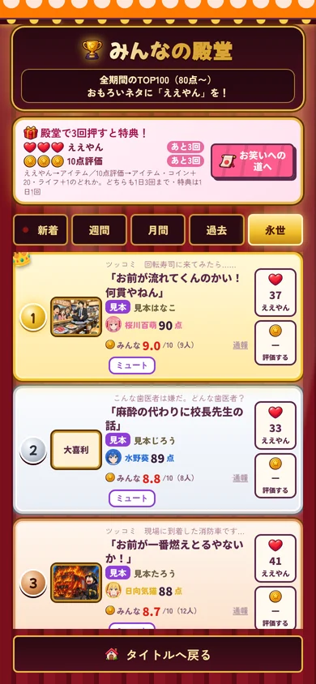
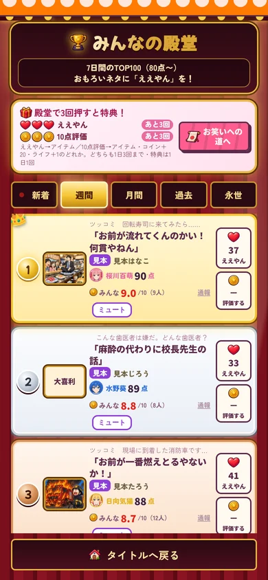

みんなの殿堂
AIが80点以上をつけた名回答だけが並ぶ、笑いの殿堂。あなたの一言も、いつかここに。
ABOUTみんなの殿堂とは？
AIが80点以上をつけた名回答だけが入れる、笑いの殿堂。ほかのプレイヤーの回答に「ええやん」や評価を送って、いちばんおもろい一言を一緒に決めよう。


- AIが80点以上で殿堂入り
- 「ええやん」と10点満点の評価
- 新着・週間・月間・永世
- おもろい回答はホームページにも
AIが80点以上をつけた名回答だけが並ぶ、笑いの殿堂。あなたの一言も、いつかここに。
AIが80点以上をつけた名回答だけが入れる、笑いの殿堂。ほかのプレイヤーの回答に「ええやん」や評価を送って、いちばんおもろい一言を一緒に決めよう。

